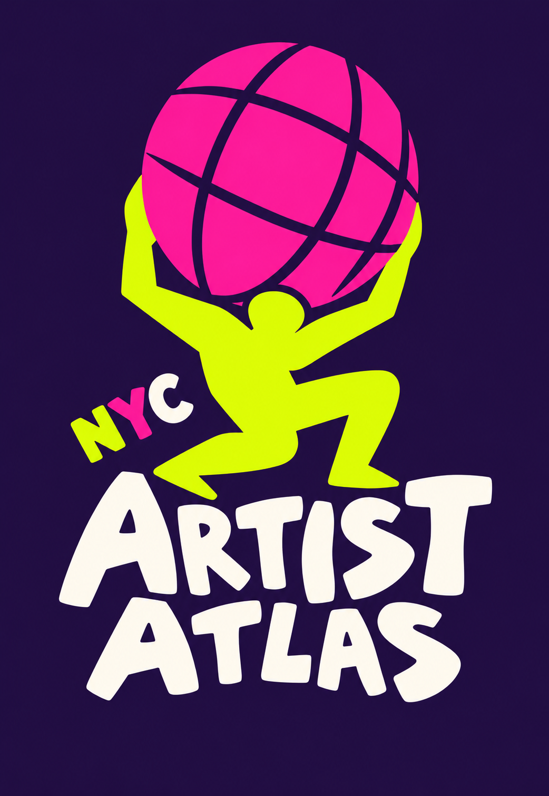

Introducing Artist Atlas
Find your next open call, residency or grant in NYC.
Artist Atlas is a multi-agent tool for NYC artists. It gathers opportunities from across the city, ranks them by fit, and puts a source and a check date on every result.
Press the right arrow to begin.
The problem
Opportunities exist.
Finding them is the problem.
Open calls, residencies and grants for NYC artists are scattered across many sites, and none of them match a creator's medium or goals.
Who it's for
Working artists with no insider network
Early-career artist
Needs
Open calls and residencies that fit a medium and a budget.
Multidisciplinary creator
Needs
Venues and community programs, not only grants, with each opportunity type ranked on its own.
Artist deciding what's worth applying to
Needs
To trust that a listing is real and still open, because every application costs time, and sometimes a fee.
How it works
Two models, everything else plain code
A one-time backfill builds a snapshot of NYC opportunities. Every request then runs against that snapshot, so results are repeatable.
Once: build the snapshot
Every request
Coral and gold boxes are the model steps. Outlined boxes are ordinary code. The Snapshot box's guardrails get their own animated slide: One snapshot, no silent conflicts.
One search, start to finish
Jon is a visual artist and a musician in Brooklyn
What makes these agents?
An agent loops: it looks, decides, acts, then goes round again with what it learned.
| Part | Looks at | Decides | Does | Loops? |
|---|---|---|---|---|
| Extractor before Jon arrives | One raw listing | The deadline, fee, eligibility, discipline | Saves those fields with source quotes | No. One pass per listing. |
| Filter plain code | Jon's form and the snapshot | Fixed rules | Cuts the list | Not an agent. |
| Ranker | The short list, and the Reviewer's note on a retry | The order, and why | Hands over a ranking | Yes, when sent back. |
| Reviewer | The ranking and what Jon asked for | Does it fit? | Accepts, or rejects with a note | Yes. It sends it round again. |
| Checks, Output plain code | Each result | Source and date present? Which label? | Pass or fail, then label | Not agents. |
The one real loop: Ranker proposes, Reviewer judges, the note goes back, up to 3 tries. Everything else is a single pass or plain code. In other words, a generator and a critic working in a review loop.
I'm a: ☑ Visual artist ☑ Musician ☐ Actor ☐ Writer
Where: Brooklyn
Looking for: Open calls, residencies
Borough, artist type, and opportunity typeKeeps Brooklyn listings tagged visual art or music.
Drops anything expired and counts how many.
the short list (e.g. 14 listings)Puts the short list in order for Jon and writes why.
Gallery application #1, open mic #2, and so on.
A ranked list, with a reason for each spotAsks: does this list fit Jon?
Waiting for the ranking…
Sent back to the Ranker with a short reason3 expired listings removed.
Draft: asking for disciplines (visual artist, musician, actor…) is proposed and is not in the lean PRD yet. Nothing is saved about Jon after the search.
The agent loop
Follow one request through the agents
Technical handoff
The loop's rules
Three tries, no loosening, no self-grading
Concurrency and shared state
One snapshot, no silent conflicts
The backfill is the only writer. Filter, Ranker and Reviewer only read it. Watch one listing move through three guardrails before anyone can see it.
Technical detail
Enough for v1: the backfill runs once, so there's nothing to coordinate between live writers — but the dedupe key and staged publish still matter, since the same listing shows up across sources and a failed run must never replace a working snapshot.
What changes for the artist
Artist Atlas
Thank you.
Built by Jon and Mara.